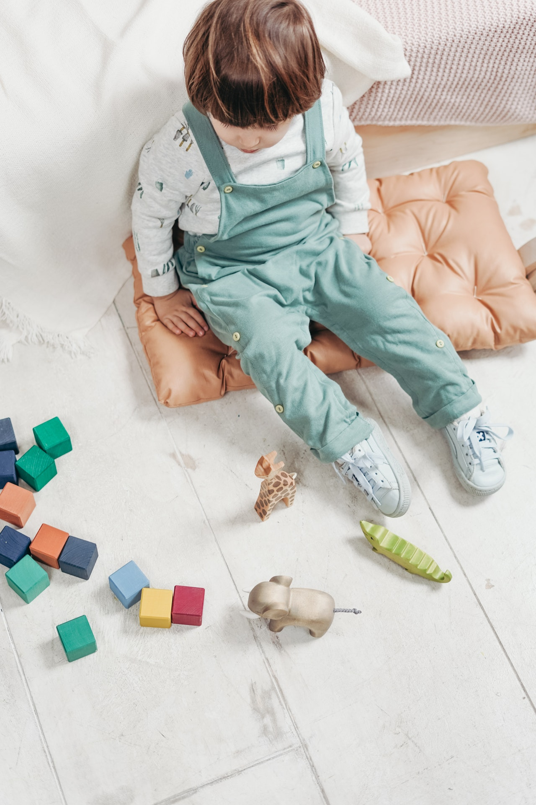
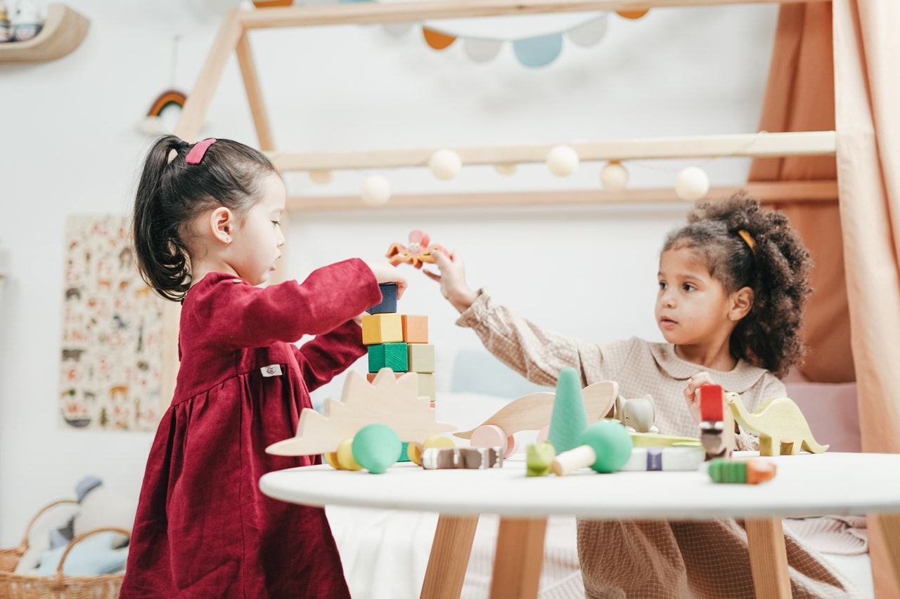
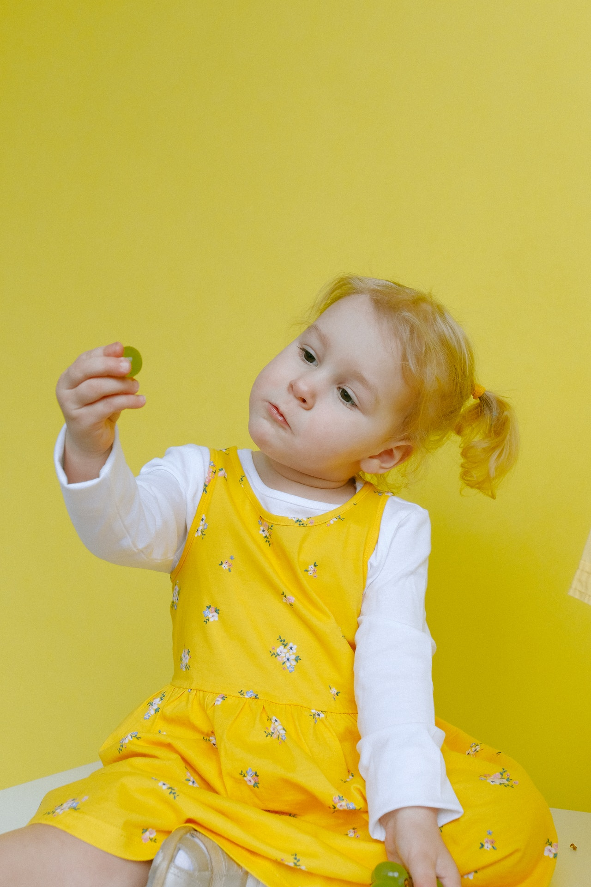

de Noelia Muñoz
Durante el desarrollo de los niños, aparecen tres tipos de egocentrismo.
- Egocentrismo físico
: Provoca que el niño no sea capaz de reconocer el punto de vista del resto. Debido a este tipo de egocentrismo, durante esta etapa, el niño está centrado en su propio cuerpo y en sus propias acciones. Además también impide que establezca relaciones objetivas entre los objetos.

- Egocentrismo social: Es el egocentrismo que se da en el plano de las relaciones interpersonales. Provoca que las relaciones del niño con los demás en el mundo social no sean totalmente cooperativas. Es por esto que durante esta etapa es capaz de jugar con otros pero no de manera coordinada.

- Egocentrismo lógico: Es el egocentrismo del plano del razonamiento. Provoca que el niño llegue a conclusiones a partir de su propia intuición de la realidad.
